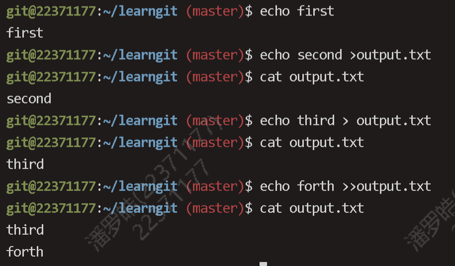
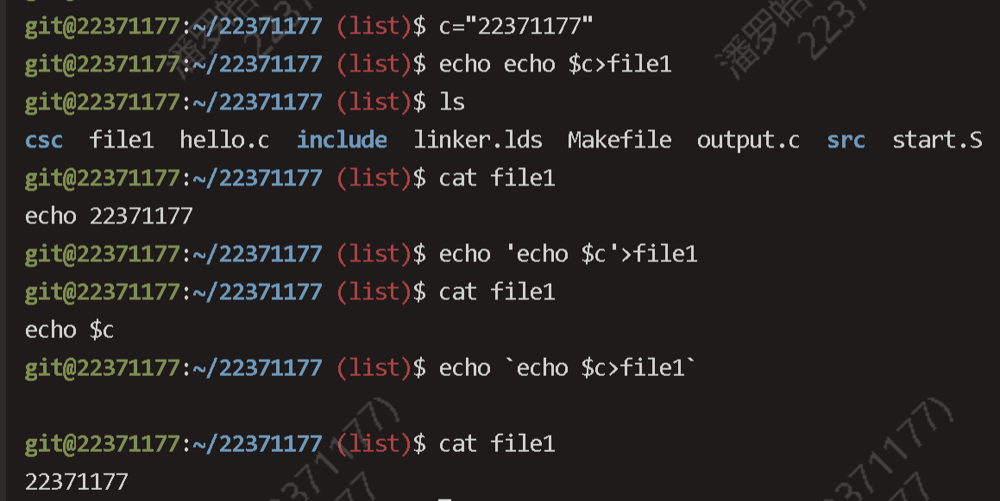

OS lab 0 实验报告
Thinking
Thinking 0.1
思考下列有关 Git 的问题：在前述已初始化的 ~/learnGit 目录下，创建一个名为 README.txt 的文件。执行命令 git status > Untracked.txt（其中的 > 为输出重定向，我们将在 0.6.3 中详细介绍）。
命令:
touch README.txt
git status > Untracked.txt Untracked.txt内容:
位于分支 master
尚无提交
未跟踪的文件:
（使用 "git add <文件>..." 以包含要提交的内容）
README.txt
Untracked.txt
提交为空，但是存在尚未跟踪的文件（使用 "git add" 建立跟踪）• 在 README.txt 文件中添加任意文件内容，然后使用 add 命令，再执行命令 gitstatus > Stage.txt。
命令:
vim README.txt
git add README.txtStage.txt内容:
master尚无提交 要提交的变更： （使用 "git rm --cached <文件>..." 以取消暂存） 新文件： README.txt 未跟踪的文件: （使用 "git add <文件>..." 以包含要提交的内容） Stage.txt Untracked.txt
• 提交 README.txt，并在提交说明里写入自己的学号。
git commit -m "22371177"• 执行命令 cat Untracked.txt 和 cat Stage.txt，对比两次运行的结果，体会README.txt 两次所处位置的不同。
说明 README.txt 文件从未跟踪到进入暂存区
未跟踪的文件:
（使用 "git add <文件>..." 以包含要提交的内容）
README.txt
-----------------------------------------区别
新文件： README.txt• 修改 README.txt 文件，再执行命令 git status > Modified.txt。
vim README.txt
git status > Modified.txt• 执行命令 cat Modified.txt，观察其结果和第一次执行 add 命令之前的 status 是否一样，并思考原因。
Modified.txt如下，与status不一样，说明README.txt 从未跟踪到暂存再到跟踪后经过了修改
位于分支 master
尚未暂存以备提交的变更：
（使用 "git add <文件>..." 更新要提交的内容）
（使用 "git restore <文件>..." 丢弃工作区的改动）
修改： README.txt
未跟踪的文件:
（使用 "git add <文件>..." 以包含要提交的内容）
Modified.txt
Stage.txt
Untracked.txtThinking 0.2
仔细看看0.10，思考一下箭头中的 add the file 、stage the file 和commit 分别对应的是 Git 里的哪些命令呢？
分别对应 git add ,git add, git commit
Thinking 0.3
思考下列问题：
-
代码文件 print.c 被错误删除时，应当使用什么命令将其恢复？
git checkout -- print.c -
代码文件 print.c 被错误删除后，执行了 git rm print.c 命令，此时应当使用什么命令将其恢复？
reset HEADgit reset HEAD print.c git checkout -- print.c -
无关文件 hello.txt 已经被添加到暂存区时，如何在不删除此文件的前提下将其移出暂存区？
git rm --cached hello.txt
Thinking 0.4
思考下列有关 Git 的问题：
• 找到在 /home/22xxxxxx/learnGit 下刚刚创建的 README.txt 文件，若不存在则新建该文件。在文件里加入 Testing 1，git add，git commit，提交说明记为 1。模仿上述做法，把 1 分别改为 2 和 3，再提交两次。使用 git log 命令查看提交日志，看是否已经有三次提交，记下提交说明为 3 的哈希值a。
以上命令结果如下，使用 git log --oneline --oneline 参数可以将记录显示在一行，比较方便查看
f858ab3 (HEAD -> master) 3
8addcd3 2
73ce2ef 1提交说明为 3 的哈希值 a 为 f858ab3
• 进行版本回退。执行命令 git reset --hard HEAD^ 后，再执行 git log，观察其变化。
可以发现说明为3的提交找不到了
8addcd3 (HEAD -> master) 2
73ce2ef 1• 找到提交说明为 1 的哈希值，执行命令 git reset --hard
可以发现回到了最初的版本
73ce2ef (HEAD -> master) 1• 现在已经回到了旧版本，为了再次回到新版本，执行 git reset --hard
f858ab3 (HEAD -> master) 3
8addcd3 2
73ce2ef 1可以发现这个版本之前的提交版本都可以找到了
Thinking 0.5
执行如下命令, 并查看结果
• echo first
• echo second > output.txt
• echo third > output.txt
• echo forth >> output.txt

以上指令是echo，输出重定向基本用法，其中>和>>分别是覆盖和追加到输出
Thinking 0.6
使用你知道的方法（包括重定向）创建下图内容的文件（文件命名为 test），将创建该文件的命令序列保存在 command 文件中，并将 test 文件作为批处理文件运行，将运行结果输出至 result 文件中。给出 command 文件和 result 文件的内容，并对最后的结果进行解释说明（可以从 test 文件的内容入手）. 具体实现的过程中思考下列问题: echo echo Shell Start 与 echo echo Shell Start 效果是否有区别; echo echo $c>file1与 echo echo $c>file1 效果是否有区别.
commond文件:
#!/bin/bash touch test
echo 'echo Shell Start...' > test
echo 'echo set a = 1' >> test
echo 'a=1' >> test
echo 'echo set b = 2' >> test
echo 'b=2' >> test
echo 'echo set c = a+b' >> test
echo 'c=$[$a+$b]' >> test
echo 'echo c = $c' >> test
echo 'echo save c to ./file1' >> test
echo 'echo $c>file1' >> test
echo 'echo save b to ./file2' >> test
echo 'echo $b>file2' >> test
echo 'echo save a to ./file3' >> test
echo 'echo $a>file3' >> test
echo 'echo save file1 file2 file3 to file4' >> test
echo 'cat file1>file4' >> test
echo 'cat file2>>file4' >> test
echo 'cat file3>>file4' >> test
echo 'echo save file4 to ./result' >> test
echo 'cat file4>>result' >> test
result文件:
3
2
1解释说明： file1保存了c，file2保存了b，file3保存了a，file4顺序保存了file1,file2,file3,也就是3，2，1，file 4 追加到result后，所以result和file4内容一样。
- echo echo Shell Start 与 echo `echo Shell Start` 效果是否有区别;
echo echo Shell Start 会输出 echo Shell Start
echo `echo Shell Start ` 会输出Shell Start, 原因是`echo Shell Start ` 的输出是外层echo 的输入，故会输出 Shell Start
-
echo echo $c>file1与 echo `echo $c>file1` 效果是否有区别.

如图，有区别，给c赋一个值22371177，第一个命令会在file1里输出echo 22371177
第二个命令会在先执行echo $c>file1,在file1里输出22371177，由于输出被重定向了，所以终端没有输出，所以第一个echo也就没有输出
总结：双引号可以识别变量，单引号原样输出，反引号执行命令并将结果赋值给变量
Exercise
Exercise 0.1
-
补全程序判断是否是回文数
all:palindrome.c
gcc palindrome.c -o palindrome-
hello_os.sh:
sed -n "8p;32p;128p;512p;1024p" "$1" >"$2" -
cp 基础用法，不赘述
Exercise 0.2
rm "file$a" -r
mv "file$a" "newfile$a"
let a=a+1 #修改循环变量的值Exercise 0.3
#First you can use grep (-n) to find the number of lines of string.
#Then you can use awk to separate the answeri.
grep -n $2 $1 | cut -f1 -d: > $3
grep -n "$2" "$1" | awk -F: '{print $1}' > "$3"
grep -n "$2" "$1" >helper
awk -F: '{print $1}' helper > "$3"Exercise 0.4
Lab0 第四道练习题包括以下两题，如果你均完成且正确，即可获得 26 分。
1、在 Lab0 工作区的 csc/code 目录下，存在 fibo.c、main.c，其中 fibo.c 有点小问题，还有一个未补全的 modify.sh 文件，将其补完，以实现通过命令 bash modify.sh fibo.c char int，可以将 fibo.c 中所有的 char 字符串更改为 int 字符串。[注意：对于命令 bash modify.sh fibo.c char int，fibo.c 可为任何合法文件名，char 及 int 可以是任何字符串，评测时评测 modify.sh 的正确性，而不是检查修改后 fibo.c 的正确性]
sed -i "s/$2/$3/g" $12、Lab0 工作区的 csc/code/fibo.c 成功更换字段后 (bash modify.sh fibo.c charint)，现已有 csc/Makefile 和 csc/code/Makefile，补全两个 Makefile 文件，要求在csc 目录下通过命令 make 可在 csc/code 目录中生成 fibo.o、main.o，在 csc 目录中生成可执行文件 fibo，再输入命令 make clean 后只删除两个 .o 文件。[注意：不能修改fibo.h 和 main.c 文件中的内容，提交的文件中 fibo.c 必须是修改后正确的 fibo.c，可执行文件 fibo 作用是输入一个整数 n(从 stdin 输入 n)，可以输出斐波那契数列前 n 项，每一项之间用空格分开。比如 n=5，输出 1 1 2 3 5] 要求成功使用脚本文件 modify.sh 修改 fibo.c，实现使用 make 命令可以生成 .o 文件和可执行文件，再使用命令 make clean 可以将 .o 文件删除，但保留 fibo 和 .c 文件。最终提交时文件中 fibo 和 .o 文件可有可无。
fibo:
cd code && make ### 等价于 $(MAKE) -C ./code $(MAKE) -C subdir main 子目录下执行make main
gcc ./code/fibo.o ./code/main.o -o fibo
clean:
rm ./code/*.oall: fibo.c main.c
gcc -c fibo.c -I ../include
gcc -c main.c -I ../include-I ../include 当引用非标准库头文件时要加
cd code && make 等价于 $(MAKE) -C ./code
本次实验分析
我认为本次实验的难点主要在于awk，grep，sed和shell编程的综合使用，不是很确定某些参数的用法，也导致了上机测试中卡住。
另外，没有理解清楚指导书中权限的某一种表示方法，导致无法正确使用chmod，给上机带来了较大困难。
体会与感想
lab0主要想学习实验中一些常用的工具，难度不大但是比较细，指导书提供的内容比较局限，很多用法还是要靠查资料，掌握的比较慢，上机中也因为不熟悉不知道如何使用特定情况况下的命令，以后还是要多试多学。
如果您喜欢此博客或发现它对您有用，则欢迎对此发表评论。 也欢迎您共享此博客，以便更多人可以参与。 如果博客中使用的图像侵犯了您的版权，请与作者联系以将其删除。 谢谢 ！